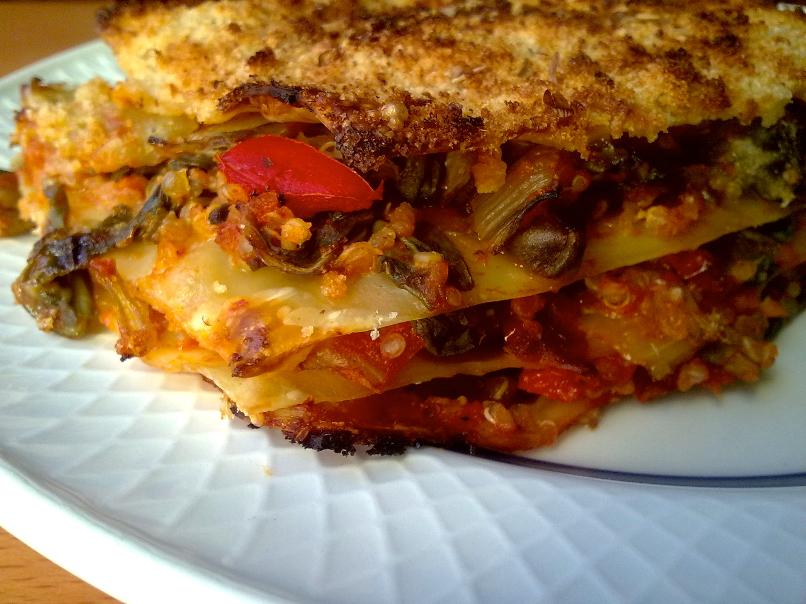

<h1>Lasagna</h1>



<h2>Description</h2>
<p>Butternut squash is hearty on its own, but the coconut milk makes the mixture truly rich.</p>

<h2>Ingredients</h2>
<ul>
    <li>200g rice</li>
    <li>2 little spoons of curry</li>
    <li>400ml coconaut milk</li>
</ul>

<h2>Steps</h2>
<ol>
    <li>Cooking vegetables</li>
    <li>Adding milk</li>
    <li>Curry</li>
    <li>Bon apetit!</li>
</ol>